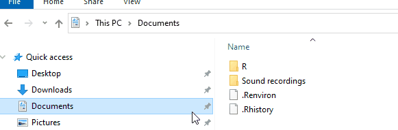
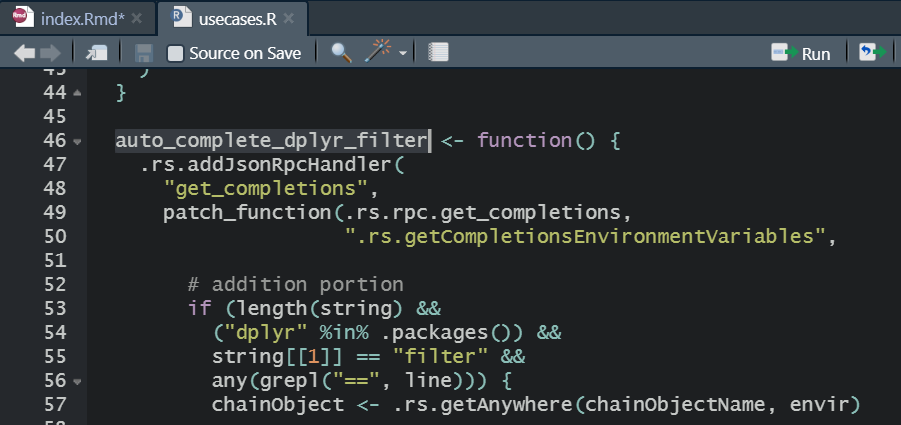
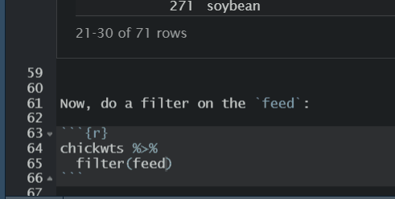

This post is based on Ayush Patel’s post that describes the use of the patch package that lets you choose from a menu of character/factor values in RStudio.
patch packageremotes::install_github("r-rudra/patch")The official description of the package is:
{patch} is #rstats package for patching functions on the fly
patch packageThe patch package has a script named usecases.R that shows the common use cases of the package. It is located in the installed package folder as shown below:

If you open the usecases.R script, you’ll see that contains a function called auto_complete_dplyr_filter, as shown in the image below:

Therefore, we need to load this function to get the feature of autocompleting the character or factor values in a dplyr::filter():
source(system.file("embedded","usecases.R",package = "patch"))##
## These are designed for R-Studiolibrary(dplyr)##
## Attaching package: 'dplyr'## The following objects are masked from 'package:stats':
##
## filter, lag## The following objects are masked from 'package:base':
##
## intersect, setdiff, setequal, unionNow we can easily select the desired character/factor value from the autocomplete menu. Let’s first load a data set and see the factor values in it.
data("chickwts")
chickwts## weight feed
## 1 179 horsebean
## 2 160 horsebean
## 3 136 horsebean
## 4 227 horsebean
## 5 217 horsebean
## 6 168 horsebean
## 7 108 horsebean
## 8 124 horsebean
## 9 143 horsebean
## 10 140 horsebean
## 11 309 linseed
## 12 229 linseed
## 13 181 linseed
## 14 141 linseed
## 15 260 linseed
## 16 203 linseed
## 17 148 linseed
## 18 169 linseed
## 19 213 linseed
## 20 257 linseed
## 21 244 linseed
## 22 271 linseed
## 23 243 soybean
## 24 230 soybean
## 25 248 soybean
## 26 327 soybean
## 27 329 soybean
## 28 250 soybean
## 29 193 soybean
## 30 271 soybean
## 31 316 soybean
## 32 267 soybean
## 33 199 soybean
## 34 171 soybean
## 35 158 soybean
## 36 248 soybean
## 37 423 sunflower
## 38 340 sunflower
## 39 392 sunflower
## 40 339 sunflower
## 41 341 sunflower
## 42 226 sunflower
## 43 320 sunflower
## 44 295 sunflower
## 45 334 sunflower
## 46 322 sunflower
## 47 297 sunflower
## 48 318 sunflower
## 49 325 meatmeal
## 50 257 meatmeal
## 51 303 meatmeal
## 52 315 meatmeal
## 53 380 meatmeal
## 54 153 meatmeal
## 55 263 meatmeal
## 56 242 meatmeal
## 57 206 meatmeal
## 58 344 meatmeal
## 59 258 meatmeal
## 60 368 casein
## 61 390 casein
## 62 379 casein
## 63 260 casein
## 64 404 casein
## 65 318 casein
## 66 352 casein
## 67 359 casein
## 68 216 casein
## 69 222 casein
## 70 283 casein
## 71 332 caseinNow, do a filter on the feed:

And the result is:
chickwts %>%
filter(feed == "linseed")## weight feed
## 1 309 linseed
## 2 229 linseed
## 3 181 linseed
## 4 141 linseed
## 5 260 linseed
## 6 203 linseed
## 7 148 linseed
## 8 169 linseed
## 9 213 linseed
## 10 257 linseed
## 11 244 linseed
## 12 271 linseed